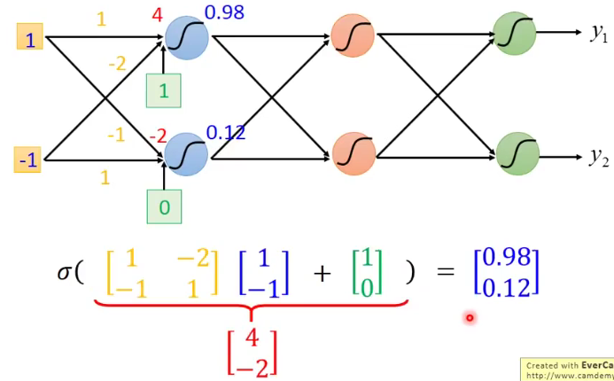
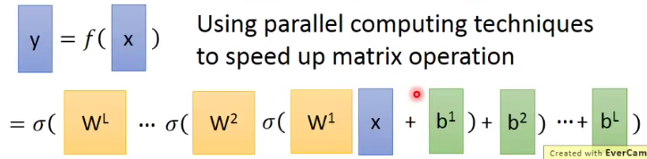

TASK04 - P13+P14

P13 Deep Learning
by Hung-yi Lee - Machine Learning 2017 - P13 深度学习
THREE STEPS FOR DEEP LEARNING
| Step 1 | Step 2 | Step 3 |
|---|---|---|
| Define a function set | Goodness of function | Pick the best function |
Step 1 : Define function
- 这个function也就是神经网络Neural Network。
1.1 Neural Network 是什么？
由不同的logistic regression连接（concatenate）在一起，把其中一个logistic regression称之为神经元Neuron。
1.2 神经元 Neuron 中：
- Network structures: 不同的连接。不同于regression不需考虑structure，神经网络中的structure(有多少层layer，每层layer有多少neuron等)很重要
- Network parameter θ: 大堆logistic regression的weight和bias集合起来
1.3 neuron间怎么连接？
- 最常见的称作：Fully Connect Feedforward Network
- 把神经元排成一排一排
- 每个neuron都有一组weight和bias，通过training data找出来
- 整个process：
input→matrix运算(diff. weight & bias) →logistic regression(sigmoid function)→ 重复于不同layer →output
input是一个vector，output也会是一个vector
给定的结构 = define a function set
1.4 Fully Connect Feedforward Network
- layer和layer之间两两相连，所以称之为fully connect
- 从layer1传到layer2，由后往前传（此处 后指layer数字更小，即远离output端为后，靠近output端为前）
Input Layer→Hidden Layers→Output Layer
那Deep Learning中的 Deep = ManyHidden Layers。
1.5 Network的运作：Martix Operation


- blue:
input= vector - yellow:
weight= matrix - green:
bias= vector - blue:
output= logistic regression, 可以是sigmoid, 但现在并不常用
1.6 Output layer
- Output Layer之前的部分看作是特征值提取器（feature extractor），代替特征工程（feature engineering）
- Output Layer为多级分离器（multi-class classifier）
相当于前面Hidden Layers中抽出一组特别好的feature，并用multi-class classifier分类好，用softmax function。
1.7 Structure
- 多少层？多少神经元？
多尝试+直觉（经验） - 结构自动生成：Evolutionary Artificial Neural Networks
- 自己设计结构：CNN Convolutional Neural Network
Step 2 : Goodness of function
output为y，target为y^，目标就是y,y^ 越小越好。
Total Loss: L = Σ Cn(θ) 即所有loss的总损失最少。
→ gradient descent → network parameter θ调整
- Backpropagation：反向传播有效计算w对L的微分
有以下toolkit：
Step 3 : Pick the best function
P14 Backpropagation
by Hung-yi Lee - Machine Learning 2017 - P14 反向传播
Chain Rule
通过微分或偏微分的分裂，把初始函数和目标函数对应。
- Case 1. 串联： y = g(x), z = h(y)
Δx → Δy → Δz - Case 2. 串联： x = g(s), y=h(s), z = k(x,y)
Δs → Δx → Δz
Δs → Δy → Δz
Loss function
求Loss function L(θ) = ΣCn(θ) 对w的偏导：
𝜕L(θ)/𝜕w = Σ 𝜕Cn(θ)/𝜕w展开后：
𝜕C/𝜕w = (𝜕z/𝜕w) * (𝜕C/𝜕z)
其中前项：𝜕z/𝜕w= x (input项)，因为z = x1w1+x2w2+…+b
也就是可以用Forward path正向计算偏微分。但是：展开式后项
𝜕C/𝜕z很难算，所以用Backward path来算。其过程相当于电路中放大器的做法。backward path的需要正向算完，得出output后，再反向算得偏导。